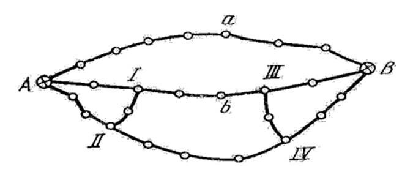
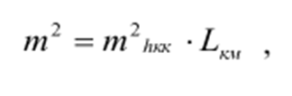
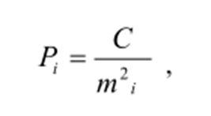
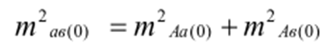
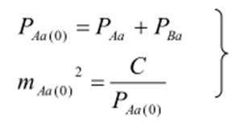
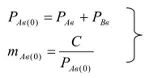
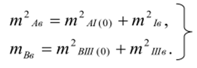
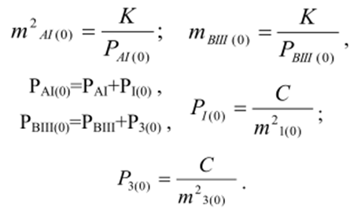
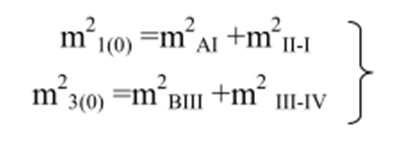
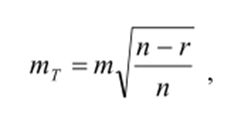

12-амалий иш Мавзу: Баландлик тармоқлари лойиҳаси аниқлигини баҳолаш
Трассаларни нивелирлаш лойиҳасини тузишда уларни асосан тупроқ йўллар бўйлаб жойлаштириш,
катта нишабликдаги жойларни, ботқоқ ва сув ҳавзаларини четлаб ўтиш тавсия этилади.
ІІ синф нивелирлаш тармоғи таркибида чўкмайдиган ва музламайдиган жойларга ўрнатилган камида
иккита реперлар тўплами бўлиши керак. Бу реперлар иншоотлар чўкишини кузатишда
фойдаланиладиган ишчи реперларни назорат қилишда қўлланилади.
Планда асосий пунктлар А,В ва I, II, III, IV туташ нуқталар билан нивелир тармоғи
лойиҳаланган бўлсин (1-расм). Агарда бу тармоқ топографик план олиш учун асос сифатида
ишлатилса, тармоқнинг энг заиф жойидаги репер баландлигини аниқлаш хатолигини баҳолаш ҳамда
а ва в реперлар ўзаро ҳолати хатолигини аниқлаш талаб этилади.

1-расм. Нивелирлаш тармоғи схемаси
а ва в реперлар оралиғидаги нисбий баландлик хатолиги нивелирлаш аниқлигини ҳисоблаш
учун керак бўлади. Биринчи навбатда, лойиҳаланаётган нивелирлаш тармоғининг схемасидан ва
техникавий тавсифномасидан фойдаланиб ўрта квадратик хатолик ва тугун реперлар орасидаги
нисбий баландлик вазни ҳисобланади. Бунинг учун қуйидаги ифодадан фойдаланиш мумкин:

бу ерда мhkm- 1 км йўлни нивелирлаш ўрта квадратик хатолиги; Lнивелирлаш йўлининг
узунлиги,
км.
Ўлчанган нисбий баландликлар вазни қуйидагича ҳисобланади:

бу ерда C-мақсадга мувофиқ танланган сон. а ва в нуқталар орасидаги нисбий баландликни топиш
аниқлигининг дастлабки ҳисобини кўриб чиқамиз. Аав ва АвB йўллар умумий боғлиқликка эга
эмас. Шунинг учун қуйидагини ёзиш мумкин:

нисбий баландликнинг ўрта квадратик хатолиги қуйидаги
ифода ёрдамида ҳисобланади:

Шунга ўхшаш ҳолда mАв(о) учун қуйидаги ифодани ёзиш мумкин

Ўз навбатида,

хатоликлар қийматлари A-I-II ва В-ІІІ-ІV полигонлар қийматларининг ўрта вазни
сифатида аниқланади:

m21(0) ва m23(0) қийматлар эса қуйидаги ифодадан аниқланиши
мумкин:

Топилган катталикларни кетма-кет ўрнига қўйиш билан керакли masto)
хатоликни аниқлашимиз мумкин.
hII-IV нисбий баландлик хатолигини аниқлаш учун тенглаштирилган ва
ўлчанган қийматлар орасида муносабат ўрнатувчи ифодадан фойдаланиш
мумкин:

бу ерда n- ўлчанган қийматлар сони; r- шартли тенгламалар сони.